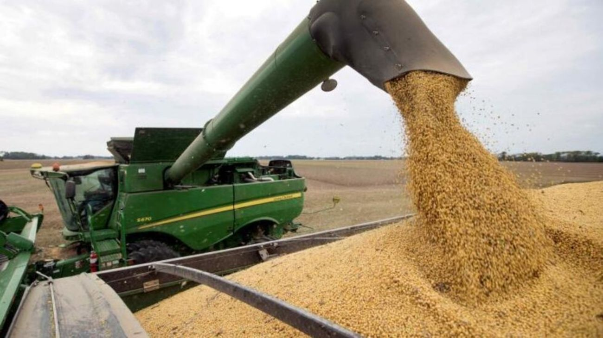

El Gobierno oficializó una baja histórica de retenciones para los principales cultivos
El Gobierno redujo las retenciones para los principales cultivos —soja, trigo, maíz, cebada, sorgo y girasol— alcanzando el nivel más bajo de alícuotas desde 2006.

El Gobierno nacional oficializó una reducción generalizada de las retenciones aplicadas a los principales cultivos agrícolas, una medida que regirá desde hoy y que ubica las alícuotas en su nivel más bajo desde 2006. La decisión abarca a la soja, el maíz, el trigo, la cebada, el sorgo y el girasol, sectores clave para la generación de divisas y la actividad económica del país.
Según lo dispuesto, la soja pasará a tributar 24%, mientras que el trigo y la cebada quedarán en 7,5%. A su vez, el maíz y el sorgo tendrán una carga del 8,5%, y el girasol reducirá su alícuota a 4,5%. Con estos cambios, el Gobierno busca mejorar la competitividad del agro, estimular la producción y reforzar el flujo de exportaciones en un contexto de reactivación económica.
Desde la administración nacional señalaron que la medida forma parte de una estrategia más amplia orientada a dar previsibilidad al sector, que históricamente ha reclamado menores cargas impositivas. Productores y entidades rurales evaluaban durante la jornada el impacto que esta modificación tendrá sobre la campaña actual y los niveles de inversión.
Con la baja oficializada, el esquema de derechos de exportación queda en su punto más reducido de los últimos 19 años, marcando un cambio relevante en la política tributaria vinculada al campo.